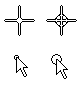

locate zone
A circular area at the center of the crosshair cursor or at the end of the arrow cursor. The locate zone specifies how close the cursor must be to an element you want to recognize or select. You can define the size of the locate zone with the IntelliSketch command.
